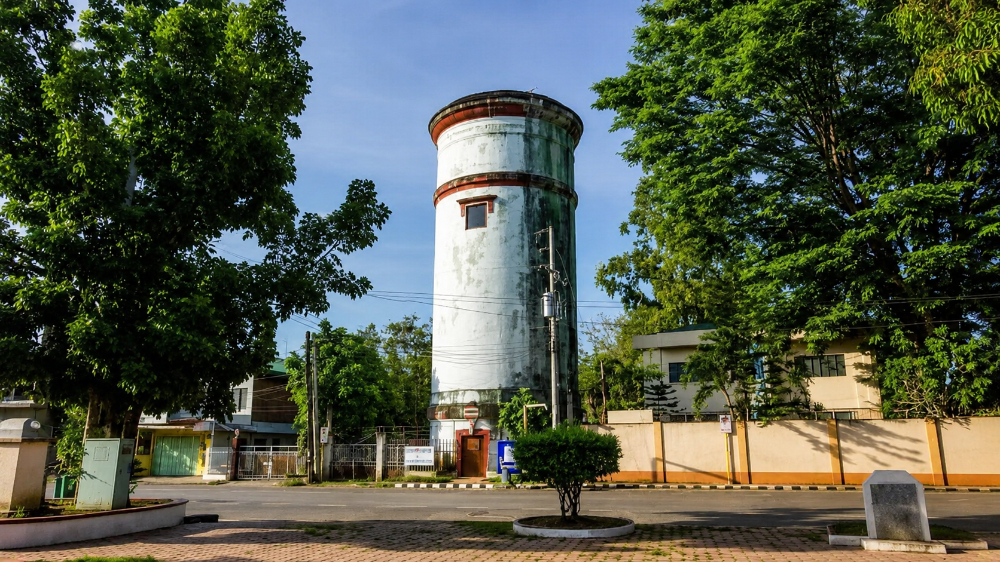
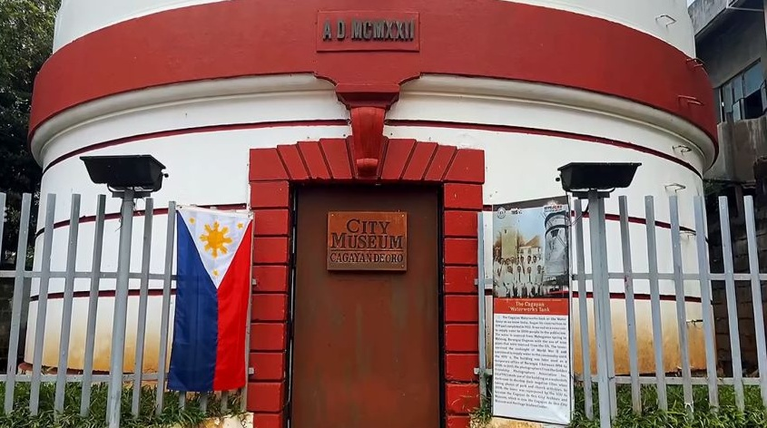

The City Museum of Cagayan de Oro


Housed in a historic water tower originally built in 1919, the City Museum of Cagayan de Oro and Heritage Studies Center stands as a vibrant guardian of Kagay-anon history and culture. Officially established on December 1, 2008, by the city government, the museum beautifully transforms a century-old landmark into a dynamic space for learning and preservation. From showcasing pivotal World War II milestones—like the historic 1945 Liberation of Cagayan de Oro—to hosting educational outreach programs, the museum bridges the city's storied past with its bright future. Located right near Gaston Park, it is a must-visit hub for locals, travelers, and researchers looking to connect with the rich heritage of Cagayan de Oro.